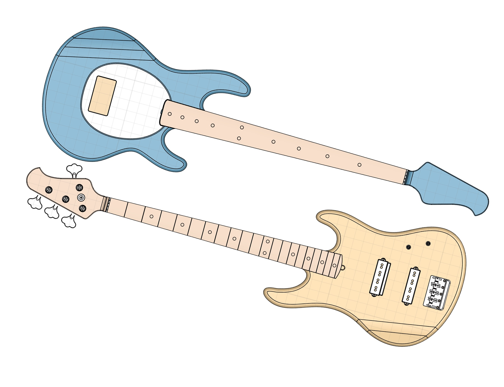
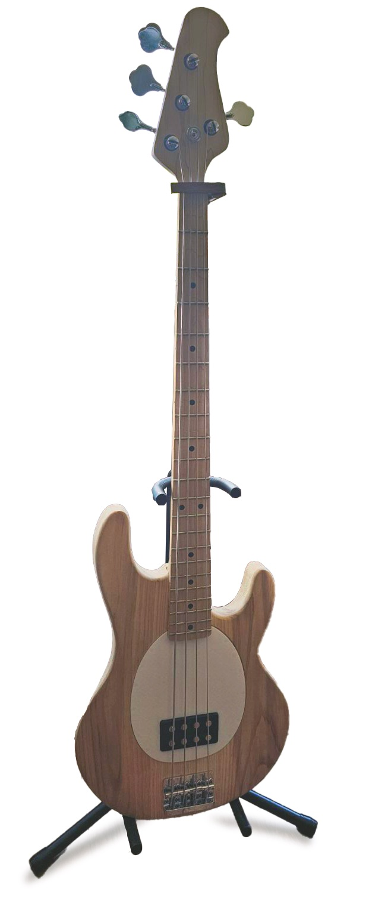

I made two bass guitars during my third year in university. The first was because the jam sessions I host with friends would always be missing a bassist, and the second was because I really liked making the first.
I made this guitar as my final project for How to Make (Almost) Anything. You can read the detailed blog post here.
It's entirely CNC routed, and the pickups and hardware are made from scratch using 3D printing.
A month after finishing the first guitar, I decided to make a second one. This time only the neck was CNC'd while I carved the body using more traditional woodworking methods.

The guitar!